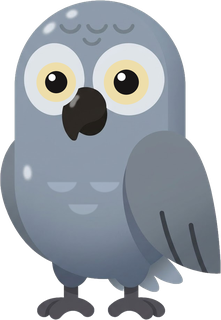

カードで「覚えた」を押すと1ポイント。同じフレーズは1日1回までです。
問題に正解すると1ポイント（カードの「覚えた」も正解に数えます）。同じフレーズでもらえるのは1日1回までです。
準備中…
ホーム画面ウィジェットの設置方法 →
以前の合言葉を貼り付けると、その記録をこの端末に読み込みます。今のこの端末の記録は上書きされます。
覚えたフレーズ、苦手、ポイント、バッジ、今日の進み具合を最初の状態に戻します。連続日数とカレンダーはそのまま残ります。